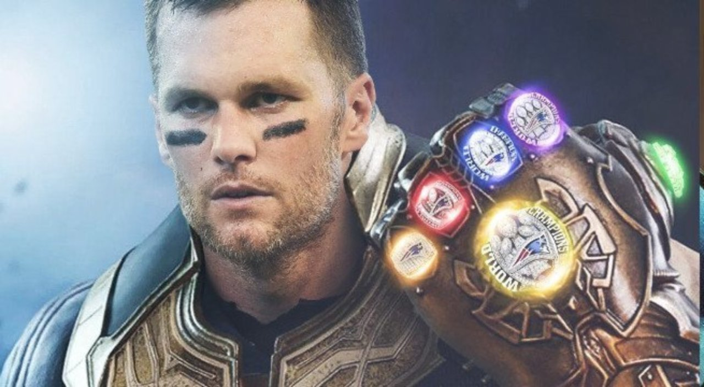

About Tom

Thomas Edward Patrick Brady Jr. (born August 3, 1977) is an American football quarterback for the New England Patriots of the National Football League (NFL). Brady has played in nine Super Bowls, and been on the winning team in six of them, the most of any football player ever; due to his numerous accomplishments, records, and accolades, he is considered by many sports analysts to be the greatest quarterback of all time.
Brady was born in San Mateo, California, on August 3, 1977, the only son and fourth child of Galynn Patricia (née Johnson) and Thomas Brady, Sr.[18] He has three older sisters, Nancy, Julie, and Maureen,[19] and was raised as a Catholic. His father is of Irish descent, while his mother has German, Norwegian, Polish, and Swedish ancestry.[20] Two of Brady's great-great-grandparents on his father's side, John and Bridget Brady, were Irish refugees from the Great Famine who moved to San Francisco from Boston before the American Civil War. They were accompanied by Bridget's sister Ann and her husband Lawrence Meegan, the parents of the 19th-century American Major League Baseball player "Steady" Pete Meegan. Brady's great-uncle Michael Buckley Jr. was the first American prisoner of war in World War II.